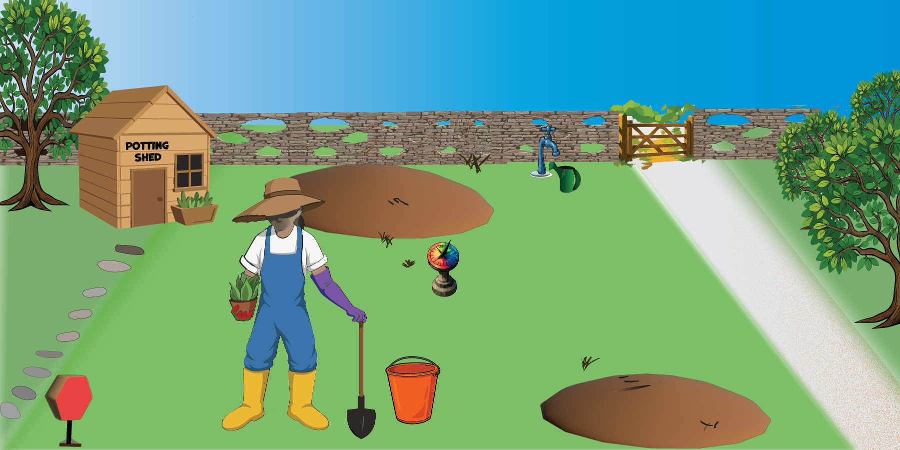
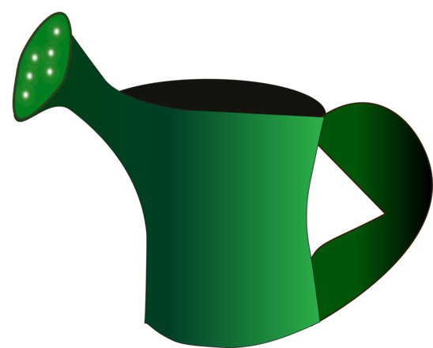

a place to tend
You tend the conditions,
not the thoughts.

You can't argue a frost into spring, or order a seed to hurry. But you can learn to read your garden — the weather, the soil, what's blooming and what's gone over — and tend the conditions that let it grow.
This was never about controlling your mind. It's about becoming its gardener.
Go gently — one screen at a time. Nothing here is a test, and there are no wrong answers.
Set the frame before they start: they are the gardener, not the weather. This isn't diagnosis — it's a kinder way to read themselves. Let them set the pace.
first, a quick tour
Welcome To Your Garden
Four things keep a garden — and each one is a part of you. Tap to meet them.
The one thing to hold onto: when the alarm goes off, the gardener gets locked out. You can't prune with the alarm blaring. So we don't fight the alarm or reason with it — we calm the weather first, and then the gardener can get back to work.
Check the locked-out idea lands. Ask: "Can you remember a time the alarm grabbed the controls and you just couldn't think straight?" Normalise it — that's the brain working as designed, not a failing.
your garden, right now
What trips your alarm?
Picture a bear at the edge of your garden. Your alarm doesn't wait to check it's really there — a shadow at the treeline is enough. Most days it's only the wind in the branches… yet the alarm fires all the same.
Everyone's alarm has its own bears. Naming yours won't switch it off — but a gardener who knows what spooks them can be ready.
Tap any that ring true — and add your own.
These are yours to know, not to fix. Knowing what trips your alarm is half of tending the garden.
Invite them to notice where the alarm shows up in the body first — chest, gut, throat, jaw? The body usually knows before the thought does. No need to solve anything here; just name it.
the hopeful part
What blooms easily
Name a strength, a special interest, a thing that grows in you without much coaxing — and plant it. Watch the bed fill with your wildflowers.
Tap any that ring true — and add your own.
These grow in you whether you tend them or not — but they grow best when you give them room and light.
If they stall, prompt gently: "What do people come to you for?" or "What could you happily lose hours in?" Special interests count — they're often the richest blooms. No strength is too small to plant.
the honest part
The weeds
Name a recurring weed-thought — the one that keeps coming back. Then decide, gently, what to do with it. A weed is just a plant in the wrong place… and sometimes not even that.
Tap any that ring true — and add your own.
Pull — challenge it or let it go · Live with — it stays, but you tend around it · Let it turn — it was never really a weed (it becomes a bloom)
Go slow here. Some weeds genuinely pull out; some have roots too deep to fight, and peace comes from tending around them. And some — over-thinking, sensitivity, intensity — were never weeds at all. Let them choose; there’s no right answer.
the part you carry
The bucket
Everything you carry collects in the bucket — it fills all day, and it has to go somewhere. The watering can is how you tip it out: poured onto the garden, the load isn't wasted — the bed drinks it. Never tip it and the bucket just overflows. (That's rumination; a good night's sleep is the overnight pour.)

What fills your bucket? Tap any that ring true — and add your own.
And how do you tip it out — onto the garden? Your watering can: the healthy ways you let the load move.
The bucket isn't the problem — not tipping it is. A full bucket is normal; the question is where it pours. If they can't name a pour, that's the work: rest, movement, talking, making something, a good night's sleep. Rumination is the bucket that overflows because it's never tipped.
the feeling you're in
Today's weather
Feelings are weather, not climate — they roll in, move through, and pass. Read the sundial for the feeling you're in right now, and the garden takes on its weather. Naming it is the practice.
The sundial does real work — naming feelings is hard (emotional granularity is often low when we're ND or overwhelmed), and labelling today's weather on a visual wheel is the front-line practice. Hold the spine: most of what you feel is weather — it passes. The two that aren't are seeking (the drive underneath) and care (connection) — they're climate, the conditions you tend, not storms to wait out.
one small act of care
Your tending plan
Choose one thing to tend this week. Just one — a gardener doesn't do everything at once, and a small act done is worth more than a long list undone. The rest can wait; they're not going anywhere.
Hold the line on one. The instinct is to fix everything; the skill is choosing the single condition that makes the most difference, and letting the rest be. Tie it to what they named — a weed to tend around, a pour for the bucket, light or rest. Doable beats ambitious.
your garden, today
Your garden map
Everything you named, gathered in one place. A garden is never finished — this is just how yours looks today. Keep it, print it, bring it back next time.